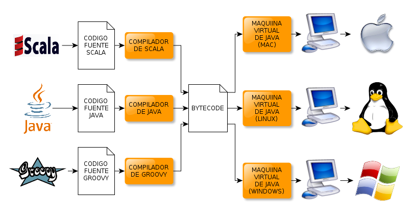
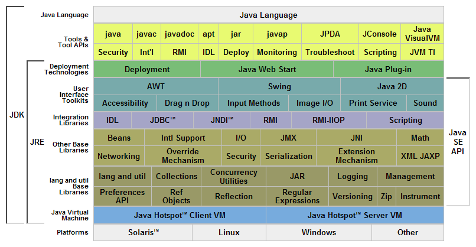

Introducción a Java
Adolfo Sanz De Diego
Junio de 2011
Historia de Java
- En 1991 James Gosling creó una plataforma para ser usada en pequeños dispositivos.
- En 1994 se reorientó hacia la web.
- En 1995 Netscape anunció que sería soportado en sus navegadores.
- En 1996 aparece JDK 1.0.
- En 2001 ya es el lenguaje de programación más popular según el índice TIOBE.
- En 2006 cambia su licencia a GPL.
- En 2009 Oracle Corporation compra Sun Microsystems.
Versiones de Java
- En 1997 aparece JDK 1.1 (AWT, inner classes, JDBC, etc.).
- En 1998 aparece J2SE 1.2 (Swing, reflexión, compilador JIT, collections, etc.).
- En 2000 aparece J2SE 1.3 (recompilación dinámica, JNDI, debugger, etc.).
- En 2002 aparece J2SE 1.4 (assert, expresiones regulares, logging, parser XML, JAAS, etc.).
- En 2004 aparece J2SE 5.0 (genéricos, autoboxing, anotaciones, enumeraciones, varargs, for mejorado, etc.).
- En 2006 aparece JSE 6.0 (combinación con lenguajes dinámicos, Rhino, etc.).
- Previsto para 2011 JSE 7.0 (superpaquetes, soporte XML nativo, closures, etc.).
Entorno de Java

Ejecución de Java

Ejecución de otros lenguajes

Características de Java (I)
- Java: el lenguaje
- Sintaxis parecida a la C++ pero sin elementos de errores (punteros, destructores, etc.).
- Lenguaje Orientado a Objetos aunque con tipos primitivos (int, char, long, etc.).
- Soporta sincronización de múltiples hilos de ejecución (multithreading).
- Gran cantidad de herramientas y APIs tanto estándar como de terceros.
Características de Java (II)
- Java: la máquina virtual
- El recolector de basura evita fugas de memoria.
- Multiplataforma "Write Once, Run Anywhere" (Escríbelo una vez, ejecútalo en cualquier lugar).
- Robusto pues realiza numerosas comprobaciones en compilación y en tiempo de ejecución.
- Alto rendimiento con la compilación JIT y con la recompilación dinámica.
APIs y herramientas de Java

APIs y herramientas
- IDEs: Eclipse, NetBeans
- Empaquetamiento: Ant, Maven, Hudson, Jenkins
- MVC: GWT, Struts, JSF, JSP
- Frameworks: Spring, Seam
- Web: Grails, Play
- Persistencia: Hibernate, JPA
- Testing: JUnit, TestNG
- Chequeos: FindBugs, CheckStyle, PMD, Cobertura, Sonar
- Móviles: Android
- Cloud: Google APP Engine
- Certificación: BlackBeltFactory